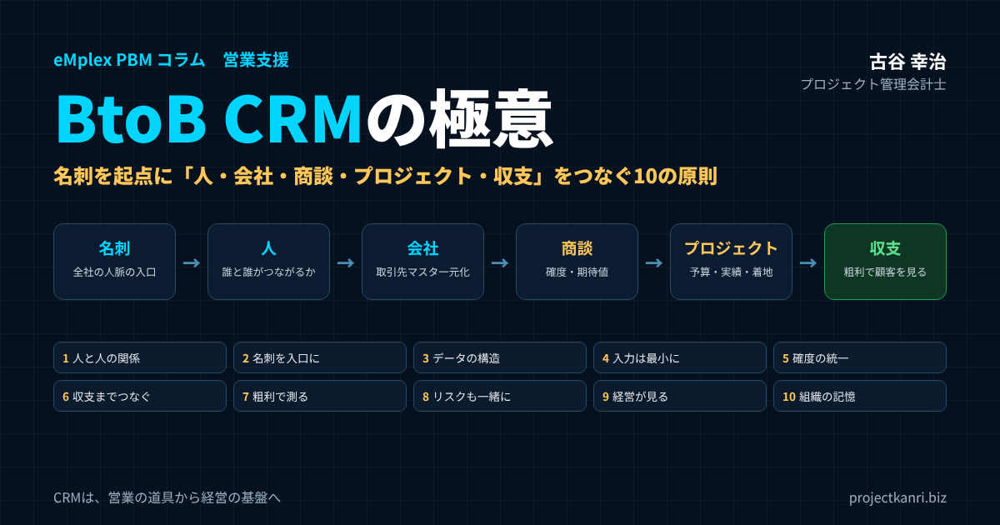

BtoB CRMの極意―名刺を起点に「人・会社・商談・プロジェクト・収支」をつなぐ。プロジェクト型ビジネスのためのCRM活用の10の原則とeMplex PBM

結論：BtoB CRMの極意は「人の関係」と「プロジェクトの収支」をつなぐこと
この記事の要点
- BtoB CRMの本質：取引は会社と会社ではなく、人と人の関係の積み重ね
- 名刺を入口に：全社の名刺を取引先マスタに統合し、人脈を組織の資産に
- 受注で終わらせない：商談をプロジェクトの予算・実績・着地見込みと収支までつなぐ
- 粗利で見る：顧客と営業の価値を、売上ではなく粗利・継続・依存度で測る
- 経営が見る：経営会議の資料をCRMから作り、CRMを組織の記憶にする
プロジェクト管理会計士の古谷です。今回は、営業と経営管理をつなぐ要となる、BtoBのCRMを取り上げます。
私は、アクセンチュア出身のメンバーが立ち上げた、ITとCRMのソフトウェアの会社、エンプレックスに参画し、取締役CFOとして経営管理と上場準備に携わりました。CRMを売る会社の中で、CRMを自社の経営にも使う。その経験を通じて、CRMが経営の力になる会社と、ただのデータの置き場で終わる会社の違いを、身をもって学びました。独立してからも、200社を超えるプロジェクト型の会社の経営管理を支援する中で、数多くのCRMの導入と、その失敗と成功を見てきました。
多くの会社で、CRMは期待どおりに機能していません。営業の担当者が入力しない、入力されても誰も見ない、経営の判断に使われない。高い費用をかけて導入したCRMが、数年後には誰も開かないシステムになっている。そうした光景は、決して珍しくありません。
結論から申し上げます。BtoBのCRMの極意は、「人の関係」と「プロジェクトの収支」をつなぐことにあります。BtoBの取引は、会社と会社の取引のように見えて、その実態は、人と人の関係の積み重ねです。そして、プロジェクト型のビジネスでは、受注はゴールではなく、プロジェクトの始まりにすぎません。名刺を入口に人の関係を捉え、商談を経て受注したプロジェクトの収支まで、ひとつながりで見る。それができたとき、CRMは営業の道具から、経営の基盤に変わります。
本稿では、BtoBのCRMとは何かを確認したうえで、CRMが失敗する理由を整理し、BtoBのCRMを機能させるための十の原則、つまり極意をお伝えします。そして、CRMを経営に生かすための指標、導入の手順、選び方、そして私たちがこの考え方を形にしたeMplex PBMでの実践までを、順を追ってご紹介します。
BtoB CRMとは：BtoCのCRMと何が違うのか
CRMとは、Customer Relationship Management、顧客との関係の管理のことです。顧客の情報と、顧客との接点の履歴を一元的に管理し、顧客との関係を深め、長く続けていくための考え方と仕組みを指します。
同じCRMでも、消費者を相手にするBtoCと、企業を相手にするBtoBとでは、管理すべきものが大きく異なります。
| 観点 | BtoC | BtoB |
|---|---|---|
| 顧客 | 個人の消費者 | 企業（その中の複数の人） |
| 意思決定 | 本人が一人で | 担当者・部門長・購買・経営者など複数 |
| 取引金額・期間 | 小さく短い | 大きく、受注までが長い |
| 受注後 | 購買で完結しやすい | プロジェクト・保守で関係が長く続く |
| 管理の中心 | 購買履歴と多数へのマーケティング | 人と人の関係、商談、プロジェクト、収支 |
BtoCのCRMでは、顧客は一人の消費者であり、購買の判断も一人で行われることがほとんどです。管理の中心は、購買の履歴や属性にもとづく、多数の顧客へのマーケティングです。
一方、BtoBのCRMでは、顧客は会社であり、その中に多くの人がいます。発注を決めるのは一人ではなく、現場の担当者、部門の責任者、購買の部門、経営者など、複数の人が関わります。取引の金額は大きく、受注までの期間は長く、受注した後も、プロジェクトや保守の契約を通じて、関係が長く続きます。そして、担当者の異動や転職によって、関係そのものが動いていきます。
だからこそ、BtoBのCRMでは、会社という単位だけでなく、会社の中の誰と、誰が、どのような関係を持っているのかを捉えることが本質になります。そして、その関係から生まれた商談、受注したプロジェクト、その収支までを、一連の流れとして管理する必要があります。
BtoBのCRMを考えるとき、もう一つ忘れてはならないのが、受注後の関係の長さです。システムの開発であれば、開発の後に保守や運用が続き、さらに次の改修や刷新の案件へとつながっていきます。一度の取引で終わるのではなく、何年にもわたって関係が続く。その長い関係の全体を、一つの流れとして管理することが、BtoBのCRMに求められています。
CRM・SFA・MAの違いと関係
BtoBの営業と顧客の管理には、CRMのほかに、SFAやMAといった言葉も使われます。それぞれの違いを整理しておきます。
| 仕組み | 主な対象 | 主な機能 |
|---|---|---|
| MA（マーケティングオートメーション） | 見込み顧客 | リード獲得、育成、メール配信、スコアリング |
| SFA（セールスフォースオートメーション） | 営業活動・商談 | 商談・活動の記録、パイプライン、予実 |
| CRM（顧客関係管理） | 顧客との関係全体 | 顧客・接点の履歴、関係の維持と深化（MA・SFAを含むことも） |
| プロジェクト型ビジネスで加えたいもの | 受注後のプロジェクト | 予算・実績・着地見込み・収支との接続 |
SFAは、Sales Force Automationの略で、営業の活動の管理や、商談の進み具合の管理を中心とした仕組みです。MAは、Marketing Automationの略で、見込みの顧客の獲得と育成、つまりマーケティングの活動を自動化する仕組みです。CRMは、これらを含む、顧客との関係の全体を管理する考え方であり、仕組みです。
実際の製品では、これらの機能が一つにまとめられていることも多く、名前の違いにこだわる必要はありません。大切なのは、見込みの顧客の獲得から、商談、受注、そして受注後の関係の維持までを、一貫して管理できるかどうかです。プロジェクト型のビジネスでは、ここに、受注後のプロジェクトの管理と収支の管理を加えて考える必要があります。
なぜBtoBのCRMは失敗するのか
BtoBのCRMの導入が失敗する理由は、ほとんどの場合、システムの機能の不足ではありません。私がこれまで見てきた失敗には、共通するパターンがあります。
| 理由 | 起きること |
|---|---|
| 目的が曖昧 | 何を入力し何を見るか決まらない |
| 入力の負担が大きい | 入力されず、データが古くなる |
| 入力しても見返りがない | 義務感だけになり形骸化する |
| 経営が見ていない | 会議は別資料、CRMは個人のメモに |
| 受注で途切れる | 顧客との関係と収支が分断される |
一つ目は、目的が曖昧なまま導入することです。「顧客の情報を一元管理したい」という目的は、間違いではありませんが、それだけでは何を入力し、何を見ればよいのかが決まりません。
二つ目は、入力の負担が大きすぎることです。項目が多すぎる、入力の画面が使いにくい、同じ情報を何度も入力しなければならない。忙しい営業の担当者にとって、入力は本来の営業の時間を奪う作業になってしまいます。
三つ目は、入力しても見返りがないことです。入力した情報が、営業の担当者自身の役に立たなければ、入力は義務感だけで続けられることになり、やがて形骸化します。
四つ目は、経営が見ていないことです。経営会議でCRMのデータが使われず、エクセルの別の資料で議論されていれば、現場はCRMに入力する意味を感じません。
五つ目は、受注で管理が途切れることです。商談の管理はCRMで行っていても、受注した後のプロジェクトの管理は別のシステムやエクセルで行われ、顧客との関係が、受注を境に分断されてしまいます。
これらの失敗を避け、CRMを経営の力にするための原則を、ここから十の極意としてお伝えします。
CRMの会社のCFOとして学んだこと
十の極意に入る前に、私がCRMのソフトウェアの会社でCFOを務めた経験から学んだことを、少しだけお話しさせてください。
CRMを提供する会社では、当然のことながら、自社でもCRMを使います。しかし、CRMを売る会社であっても、自社のCRMを経営に生かすことは、決して簡単ではありませんでした。営業の担当者は、顧客のために動くことに忙しく、入力は後回しになる。管理の部門は、CRMの数字と会計の数字が合わないことに頭を悩ませる。経営は、CRMの数字を見ても、それが会社の利益にどうつながっているのかが分からない。CRMの会社であっても、CRMの課題は、他の会社と同じでした。
そこで学んだのは、CRMの価値は、システムの機能ではなく、何と何をつなぐかの設計で決まるということです。営業の情報が、受注の後のプロジェクトと、その収支とつながったとき、初めて経営の数字になる。そして、経営がその数字を見て判断するようになったとき、現場の入力も変わっていく。この経験が、後に私が、プロジェクトの予算と実績を管理するeMplex PBMを開発し、そこにCRMの機能を組み込んでいく原点になりました。
CRMの導入に悩む多くの会社を支援してきた今、改めて感じるのは、CRMの課題は、システムの課題ではなく、経営の課題だということです。何を見て、何を判断したいのか。その問いに経営が答えられるかどうかが、CRMの成否を分けます。
極意1：顧客は「会社」ではなく「人と人の関係」で捉える
BtoBのCRMの第一の極意は、顧客を、会社という単位だけでなく、人と人の関係として捉えることです。
多くのCRMでは、取引先の会社を中心にデータを管理します。それ自体は正しいのですが、会社の情報だけを見ていても、本当の関係の状態は分かりません。同じ会社でも、どの部門の、誰と、自社の誰が、どれだけの関係を持っているのか。その関係は、深まっているのか、薄れているのか。BtoBの取引を左右するのは、こうした人と人の関係です。
| 観点 | 確認すること |
|---|---|
| 顧客側の人 | 決裁者・影響者・現場窓口は誰か |
| 自社側の人 | 誰が、顧客の誰と関係を持っているか |
| 関係の広さ | 複数の部門・階層と関係があるか |
| 関係の深さ・鮮度 | 最近の接点、関係は深まっているか薄れているか |
| 人の動き | 異動・昇進・転職による関係の変化 |
たとえば、ある大手の顧客との取引が、長年、一人の部長との関係で支えられていたとします。その部長が異動したとき、後任の方との関係が築けていなければ、取引は一気に失われるかもしれません。逆に、その会社の複数の部門、複数の階層の人と関係を持っていれば、一人の異動で関係が途切れることはありません。
人と人の関係を捉えるとは、顧客の会社の中の、誰が決裁者で、誰が影響力を持ち、誰が現場の窓口なのかを把握し、自社の側の誰が、その人とどの程度の関係を持っているのかを、組織として見えるようにすることです。この関係の地図こそが、BtoBの営業の最も大切な資産です。
人と人の関係を捉えることは、営業の担当者の頭の中にあった暗黙の知識を、組織の知識に変えることでもあります。ベテランの営業の担当者は、顧客の会社の中の誰が実際の決定権を持っているのか、誰に話を通せば物事が進むのかを、経験から知っています。その知識をCRMに残すことで、組織全体が、顧客をより深く理解できるようになります。
極意2：名刺を入口にして、全社の人脈を資産にする
人と人の関係を捉えるための、最も確かな入口が、名刺です。
BtoBの取引では、すべての関係は、名刺の交換から始まります。営業の担当者だけでなく、経営者、プロジェクトマネージャー、技術者、管理部門の社員も、日々、さまざまな人と名刺を交換しています。その一枚一枚が、会社にとっての人脈の記録です。
ところが、多くの会社では、名刺は個人の机の引き出しや、個人の名刺管理のアプリの中にとどまっています。営業の担当者が持っている名刺はCRMに登録されていても、経営者や技術者が持っている名刺は、会社の資産になっていません。
私がお勧めしているのは、全社の名刺を一つの台帳に集め、CRMの取引先と人の情報の入口にすることです。名刺の管理のサービスと連携し、交換された名刺が自動で取り込まれる仕組みにすれば、入力の手間はほとんどかかりません。そして、誰が、どの会社の、誰と、いつ名刺を交換したのかが分かれば、全社の人脈の地図が見えてきます。
名刺を起点にするもう一つの利点は、データの鮮度です。名刺の肩書きや所属は、交換のたびに新しくなります。同じ人と再び名刺を交換すれば、昇進や異動が分かります。名刺は、顧客の会社の中の人の動きを映す、最も自然なセンサーでもあるのです。名刺を起点にしたCRMの考え方については、別のコラムでも詳しく解説しています。
名刺から商談が生まれる：よくある場面
全社の名刺をCRMに集めると、思わぬところから商談の機会が見えてきます。よくある場面をご紹介します。
一つ目は、技術者の人脈です。あるプロジェクトの技術者が、顧客の別の部門の責任者と名刺を交換していた。その情報がCRMに入っていれば、営業の担当者は、その部門への提案の糸口を見つけることができます。技術者が築いた信頼関係は、営業にとって何よりの紹介状です。
二つ目は、人の異動です。以前の取引先の担当者が、別の会社に転職し、新しい名刺を交換した。CRMで同じ人の名刺の履歴を見れば、その人が新しい会社で、再び取引の相手になる可能性に気づけます。BtoBの世界では、人の移動が、新しい取引のきっかけになることが少なくありません。
三つ目は、経営者の人脈です。経営者が、業界の会合や勉強会で、多くの会社の経営者と名刺を交換している。その名刺が会社の台帳に入っていれば、営業の担当者は、経営者の人脈を通じて、新しい顧客に紹介してもらうことができます。
四つ目は、同じ会社の複数の接点です。営業の担当者は購買の部門と、プロジェクトマネージャーは現場の部門と、経営者は役員と、それぞれ別々に名刺を交換していた。CRMで一つの会社にまとめて見れば、その会社との関係の全体像が見え、組織として、どのように関係を深めていくかの戦略を立てられます。
いずれの場面も、名刺が個人の引き出しの中にある限り、見えないものです。名刺を会社の資産にすることが、BtoBの営業の新しい機会を生み出します。
セミナー・イベントとCRM：接点を関係に育てる
BtoBの営業では、セミナーや展示会、勉強会といったイベントが、新しい顧客との接点の大きな源泉になります。イベントで名刺を交換した人、セミナーに参加した人は、自社に関心を持っている見込みの顧客です。
ところが、イベントで集めた名刺が、イベントの後にそのまま放置されてしまうことは珍しくありません。せっかくの接点が、関係に育たないまま忘れられていきます。
CRMで、イベントの参加の情報を、名刺や取引先の情報と一緒に管理しておけば、誰が、どのイベントに参加し、どのテーマに関心を持っているのかが分かります。既存の顧客の会社の別の部門の人がセミナーに参加していれば、それは関係を広げる好機です。過去に失注した会社の人が参加していれば、再び提案する機会かもしれません。
イベントの後のフォローも、CRMで管理します。参加の御礼の連絡、関心の高い人への個別の提案、次のイベントの案内。こうしたフォローの状況を記録し、商談につながったかどうかを追えば、どのイベントが、どれだけの商談と受注を生んだのかが分かります。イベントへの投資の効果を測ることにもつながります。
極意3：「会社・人・商談・プロジェクト・取引」のデータの構造を最初に設計する
CRMを機能させるには、データの構造、つまり何と何をどうつなぐのかを、最初に設計することが欠かせません。
| 要素 | 内容 | つながり |
|---|---|---|
| 会社（取引先） | 取引先マスタ（名寄せして一元化） | 複数の人が所属 |
| 人（コンタクト） | 名刺を起点にした顧客側の人 | 会社に所属、商談の関係者 |
| 商談 | 金額・確度・段階・予定時期 | 人との接点から生まれる |
| プロジェクト | 受注した案件の予算・実績・着地見込み | 商談の受注から生まれる |
| 取引 | 請求・入金・契約 | プロジェクトから生まれる |
BtoBのCRMの基本の構造は、会社、人、商談、プロジェクト、取引の五つです。会社には複数の人が所属し、人との接点から商談が生まれ、商談が受注されるとプロジェクトになり、プロジェクトから請求や入金といった取引が生まれます。この五つが、互いにつながっていることが大切です。
よくある失敗は、会社と商談だけを管理し、人の情報を商談のメモの中に埋もれさせてしまうことです。あるいは、商談までは管理していても、受注した後のプロジェクトとのつながりが切れてしまうことです。こうなると、どの人との関係が、どの商談とプロジェクトを生み、どれだけの収益をもたらしたのかを追うことができません。
会社の情報を一元化することも重要です。同じ会社が、営業の部門では「株式会社〇〇」、経理の部門では「〇〇株式会社」、別の部門では略称で登録されている。こうした名寄せの不備があると、会社ごとの取引の全体像が見えなくなります。取引先のマスタを一つにまとめ、名刺や請求のデータもそこに紐づける設計にしておきます。
データの構造は、最初に決めておかなければ、後から変えるのは非常に大変です。CRMを導入する前、あるいは見直す前に、自社の取引の流れを書き出し、何と何をつなぐのかを決めてください。
データの構造の設計は、システムの担当者だけに任せず、営業、プロジェクトの管理、経理の担当者が一緒に行うことをお勧めします。それぞれの部門が、取引先や案件をどのような単位で、どのような名前で管理しているのかを持ち寄り、全社で一つの構造にまとめる。その過程そのものが、部門の間の壁を越えて、顧客を一つの視点で見る第一歩になります。
極意4：入力は最小に、自動は最大に
CRMの定着を左右する最大の要因は、入力の負担です。第四の極意は、人が入力する情報を最小にし、自動で集まる情報を最大にすることです。
| 情報 | 集め方 |
|---|---|
| 人・会社 | 名刺管理サービスとの連携で自動取り込み、取引先マスタへ名寄せ |
| 接点の履歴 | 名刺交換・メール・予定の取り込み |
| 商談 | 金額・確度・予定時期・次のアクションの4項目に絞って入力 |
| 受注後 | プロジェクトの予算・実績・収支と自動でつなぐ |
| 入力の画面 | スマホで数十秒、選択式中心 |
名刺の情報は、名刺の管理のサービスとの連携で自動で取り込みます。会社の基本の情報も、名刺から自動で作成し、既存の取引先と名寄せします。メールや予定の情報を取り込める仕組みがあれば、顧客との接点の履歴も、手入力なしで記録できます。
そのうえで、人が入力すべき情報を絞り込みます。商談であれば、金額、確度、受注の予定の時期、次のアクション。この四つがあれば、パイプラインの管理には十分です。商談のメモを長々と書いてもらう必要はありません。
入力の画面の使いやすさも大切です。スマートフォンから、移動の合間に数十秒で更新できること。選択式の項目を中心にして、文字の入力を減らすこと。入力の画面は、管理者ではなく、毎日使う営業の担当者の目線で設計してください。
そして、入力した情報が、入力した本人の役に立つようにすることです。顧客の会社の過去の取引の履歴、過去の担当者、関係の深い社員が、商談の画面ですぐに見られる。次の訪問の前に、その顧客との接点の履歴を確認できる。入力することで、自分の営業が楽になると感じられれば、入力は自然に続きます。
入力の負担を減らす工夫として、商談の更新を、営業の会議の場で行うという方法もあります。週に一度のパイプラインレビューの場で、営業の責任者と担当者が一緒に画面を見ながら、確度や予定の時期を更新する。会議の準備のための入力が不要になり、会議の時間がそのまま更新の時間になります。
極意5：商談の確度とパイプラインの定義を統一する
第五の極意は、商談の確度とパイプラインの段階の定義を、全社で統一することです。
多くの会社で、商談の確度は、営業の担当者の感覚で入力されています。「Aランク」と入力されていても、その意味は担当者によってまちまちです。ある担当者は「顧客が前向きだからA」と考え、別の担当者は「内示を受けたからA」と考えている。これでは、パイプラインを集計しても、意味のある数字になりません。
| 段階 | 客観的な定義 | 掛け率の例 |
|---|---|---|
| 接点・引き合い | 相談・問い合わせを受けた | 10〜20% |
| 提案 | 提案書を提出した | 30% |
| 見積・比較 | 見積りを提出し、比較検討されている | 50% |
| 内示 | 内示を受けた・最終条件の調整中 | 80% |
| 受注 | 契約締結 | 100% |
掛け率は自社の段階別の過去の受注率から設定します。
段階と確度は、担当者の感覚ではなく、客観的な事実で定義します。「提案書を提出した」「見積りを提出し、競合と比較されている」「内示を受けた」といった、誰が判断しても同じになる基準です。そして、段階ごとの過去の受注率から、確度の掛け率を決めます。
定義が統一されていれば、パイプラインの金額に掛け率を掛けた期待値で、将来の受注と売上を見通すことができます。この期待値は、会社の業績予想の売上の見込みの重要な材料になります。確度別のパイプラインによる業績予想の作り方については、業績予想管理のコラムで詳しく解説しています。
パイプラインの管理では、金額だけでなく、時間も見ます。どの段階に、どれだけの期間とどまっているか。長くとどまっている商談は、止まっているか、失注に向かっている可能性があります。段階ごとの滞留の期間を見ることで、手を打つべき商談が見えてきます。
失注した商談の理由を記録することも、パイプラインの管理の大切な一部です。価格で負けたのか、提案の内容で負けたのか、時期が合わなかったのか。失注の理由を選択式で記録しておけば、数か月分を集計したときに、自社の営業の弱点が見えてきます。失注は、次の受注のための最も貴重な学びの材料です。
極意6：受注で終わらせない。プロジェクトと収支までつなぐ
第六の極意は、プロジェクト型のビジネスにとって最も大切なものです。それは、CRMを受注で終わらせず、受注した後のプロジェクトと、その収支までつなぐことです。
一般的なCRMやSFAは、受注までの管理を得意としています。商談が受注になれば、そこで営業の仕事は一段落し、CRMの中の商談は「受注」として閉じられます。しかし、プロジェクト型のビジネスでは、受注はゴールではなく、プロジェクトの始まりです。受注した金額に対して、どれだけの原価がかかり、どれだけの粗利が残ったのか。それが分かって初めて、その商談が会社にとって良い商談だったのかどうかが分かります。
| 観点 | 受注で終わるCRM | 収支までつながるCRM |
|---|---|---|
| 成果の測り方 | 受注金額（売上） | 受注案件の粗利・着地見込み |
| 商談の判断 | 金額の大きさ | 過去の同種案件の粗利率も参照 |
| 営業の評価 | 売上 | 売上と粗利 |
| 顧客の見方 | 売上の大きさ | 累計の粗利・継続・依存度 |
| 赤字への気づき | プロジェクト終盤や完了後 | 受注直後から着地見込みで |
営業の世界では、受注の金額、つまり売上で成果を測ることが一般的です。しかし、売上が大きくても、プロジェクトが赤字になれば、会社にとっては損失です。受注の時点では見えなかった原価の超過が、プロジェクトの終盤で明らかになる。こうしたことが繰り返されている会社では、営業は売上の大きな案件を取りにいき、その結果、会社の利益が損なわれていきます。
CRMとプロジェクトの収支がつながっていれば、商談の段階で、過去の同じような案件の粗利率を確かめることができます。受注した後は、プロジェクトの着地見込みの粗利を、商談の情報と並べて見ることができます。そして、営業の担当者ごとに、受注の金額だけでなく、受注した案件が生んだ粗利を見ることができます。営業の成果を売上ではなく粗利で見る。この転換が、プロジェクト型のビジネスの営業を変えます。
プロジェクトが完了したら、その結果を商談の情報に戻すことも大切です。受注の時点の予定の粗利と、完了したときの実際の粗利。その差がどこから生まれたのか。こうした振り返りをCRMに残しておけば、次に同じ顧客や同じ種類の案件の商談を進めるときに、より確かな見積りと条件の交渉ができるようになります。営業とプロジェクトの間で、学びが循環する仕組みです。
受注後の関係を深める：追加の受注・保守・紹介
受注をゴールにしないCRMの考え方は、受注した後の顧客との関係を深めることにもつながります。
プロジェクト型のビジネスでは、最初の受注の後に、追加の開発や、範囲の拡大、保守や運用の契約、別の部門への展開といった形で、取引が広がっていくことが多くあります。こうした追加の受注は、新しい顧客を獲得するよりも、営業の手間が少なく、粗利率も高い傾向があります。
追加の受注の機会を逃さないためには、プロジェクトの進行中から、顧客の新しい課題や要望を捉え、CRMで共有しておくことが大切です。そして、プロジェクトの完了の時期を見据えて、次の提案の準備を始めます。プロジェクトが終わってから次の提案を考えるのでは、遅いことが多いのです。
保守や運用の契約は、継続的な売上の基盤になります。保守の契約の更新の時期、契約の範囲、対応の実績をCRMで管理し、更新の前に顧客と振り返りの場を持つことで、契約の継続と拡大につなげることができます。
極意7：顧客の価値を、売上ではなく粗利・継続・依存度で測る
第七の極意は、顧客の価値を、売上の大きさだけでなく、粗利、継続性、依存度で測ることです。
| 指標 | 見るポイント |
|---|---|
| 累計の粗利・粗利率 | 売上が大きくても粗利が小さい顧客はないか |
| 継続の年数・継続率 | 長く安定して取引が続いているか |
| 売上依存度・利益依存度 | 一社への依存のリスク、利益を支える顧客 |
| 紹介の件数 | 新しい顧客を紹介してくれる価値 |
| 与信・リスク | 回収のリスク、取引条件 |
売上の大きな顧客が、必ずしも会社にとって価値の高い顧客とは限りません。値引きの要求が強く、仕様の変更が多く、粗利率が低い顧客もいます。逆に、売上は中くらいでも、粗利率が高く、長く安定して取引が続き、他の顧客を紹介してくれる顧客もいます。
顧客ごとの粗利を見るには、CRMの顧客の情報と、プロジェクトの収支がつながっている必要があります。顧客ごとに、過去のプロジェクトの売上と粗利を集計すれば、どの顧客との取引が会社の利益を支えているのかが見えてきます。
依存度も重要な指標です。売上の多くを一社の顧客に依存していれば、その顧客を失ったときの影響は甚大です。売上の依存度と、粗利の依存度を並べて見ると、売上ではそれほど大きくないのに、利益の大きな部分を支えている顧客が見えることもあります。取引先の依存度の分析については、別のコラムで詳しく解説しています。
そして、紹介です。BtoBの取引では、既存の顧客からの紹介が、新しい取引の大きな源泉になります。どの顧客が、どの新しい顧客を紹介してくれたのかをCRMで記録しておけば、紹介という見えにくい価値も、顧客の価値として捉えることができます。紹介受注の仕組み化については、別のコラムでも取り上げています。
粗利で見ると、顧客の順位が変わる：数値例
顧客を売上ではなく粗利で見ると、どのような違いが見えてくるのか。架空の例でご紹介します。
| 顧客 | 売上（順位） | 粗利率 | 粗利（順位） |
|---|---|---|---|
| A社 | 120（1位） | 12% | 14.4（3位） |
| B社 | 90（2位） | 25% | 22.5（2位） |
| C社 | 80（3位） | 35% | 28.0（1位） |
| D社 | 40（4位） | 30% | 12.0（4位） |
数値は説明のための例です。
売上の順位では、A社が一位、B社が二位です。ところが、粗利の順位では、C社が一位になり、A社は三位に下がります。A社は売上は大きいものの、値引きの要求や仕様の変更が多く、粗利率は十二パーセントにとどまっています。一方、C社は、売上は三番目ですが、粗利率が三十五パーセントと高く、会社の利益を最も支えている顧客です。
この違いが見えると、営業の戦略が変わります。A社については、価格や取引の条件の見直しを検討します。C社については、関係をさらに深め、同じような顧客を増やすことを考えます。売上だけを見ていれば、A社に最も多くの営業の資源を振り向けていたかもしれません。
こうした分析は、CRMの顧客の情報と、プロジェクトの収支がつながっていて初めて可能になります。顧客ごとの売上は会計のデータからも分かりますが、顧客ごとの粗利、つまり、どれだけの原価がかかったのかは、プロジェクトの単位で原価を管理していなければ分からないからです。
極意8：与信・反社・契約のリスクも、顧客の情報と一緒に管理する
第八の極意は、顧客との関係を深めることと同じくらい、顧客との取引のリスクを管理することです。
BtoBの取引では、取引の金額が大きく、支払の条件も掛けの取引が一般的です。取引先の経営が悪化すれば、売掛金を回収できなくなるおそれがあります。また、取引先が反社会的勢力と関係していれば、会社の信用に関わる重大な問題になります。上場を目指す会社であれば、反社会的勢力の排除の体制は、審査で厳しく確認されます。
| 情報 | 内容 |
|---|---|
| 与信 | 与信の枠、取引総額、支払条件 |
| 反社会的勢力のチェック | チェックの実施日・結果・次回の予定 |
| AMLスクリーニング | 必要に応じたスクリーニングの記録 |
| 契約 | 基本契約・NDA・個別契約の状況 |
| 売掛金 | 未回収の残高、支払の遅れ |
これらのリスクの情報は、営業の情報とは別の場所で管理されていることが多いものです。与信の情報は経理に、反社会的勢力のチェックの記録は総務に、契約書は法務に。その結果、営業の担当者は、取引先のリスクを知らないまま商談を進めてしまうことがあります。
取引先のマスタに、与信の枠、反社会的勢力のチェックの状態、契約の状況を一緒に管理しておけば、営業の担当者は商談の段階でリスクを確認できます。新しい取引先との商談が始まった時点で、反社会的勢力のチェックと与信の確認を行う流れを、CRMの中に組み込んでおくことが理想です。
リスクの情報を営業の情報と一緒に管理することには、もう一つの効果があります。営業の担当者が、取引先の与信や支払の状況を知ることで、取引の条件の交渉に、回収のリスクという視点が加わることです。受注の金額だけでなく、確実に回収できる取引かどうかを意識する。それは、売上だけでなく、利益と資金を守る営業への第一歩です。
顧客の情報を預かる責任：個人情報の取り扱い
CRMで顧客の名刺や接点の履歴を管理するということは、顧客の会社の中の人の個人情報を預かるということでもあります。名刺に記載された氏名や連絡先も、個人情報に当たります。
個人情報を扱う会社には、利用の目的を特定し、公表や通知を行うこと、安全に管理すること、本人の同意なく第三者に提供しないことなど、法令にもとづく責任があります。CRMを導入する際には、名刺の情報をどのような目的で利用するのか、誰がどの情報を閲覧できるのか、退職した社員のアクセスをどう止めるのかを、あらかじめ決めておく必要があります。
アクセスの権限の設計は、特に重要です。全社の名刺を一つの台帳に集めることには大きな価値がありますが、すべての社員がすべての情報を自由に見られる状態は、情報の漏えいのリスクを高めます。役割に応じて、閲覧できる範囲と、操作できる範囲を設定し、操作の記録を残しておくことをお勧めします。顧客の情報を大切に扱うことは、顧客との信頼関係そのものを大切にすることです。
極意9：経営がCRMを見る。会議でCRMのデータを使う
第九の極意は、経営自らがCRMを見ることです。これは、私がCRMの会社のCFOとして、そして多くの会社の支援を通じて、最も強く感じていることです。
CRMが定着している会社では、経営会議の資料がCRMのデータから作られています。パイプラインの状況、受注の見込み、重要な顧客との関係の状態。経営者がそれをCRMの画面で直接確認し、営業の責任者に質問します。そうなれば、営業の担当者は、CRMに入力しなければ、自分の活動が経営に見えないことを理解します。
逆に、経営会議では営業の責任者がエクセルで作った別の資料が使われ、CRMは営業の担当者の個人のメモ帳になっている会社では、CRMはやがて使われなくなります。経営が見ていないものに、現場が手間をかけ続けることはありません。
| 議題 | CRMから見るもの |
|---|---|
| 受注の見通し | パイプラインの金額と期待値、段階別の滞留 |
| 重要商談 | 大型・戦略的な商談の状況と次のアクション |
| 顧客の状態 | 主要顧客の粗利の推移、関係の変化 |
| 受注案件の収支 | 受注後の着地見込みの粗利、赤字懸念案件 |
| リスク | 与信・反社チェック・未回収の状況 |
経営会議でCRMのデータを使う際には、商談の数字だけでなく、受注した案件の収支、重要な顧客の粗利の推移、取引先のリスクの状態までを、一つの流れとして見ることをお勧めします。そうすることで、営業の議論と、プロジェクトの収支の議論がつながり、会社全体の判断の質が上がります。
経営者がCRMを見る習慣は、一度の号令ではなく、毎月の会議の積み重ねでつくられます。経営者が、会議の場でCRMの画面を開き、特定の商談や顧客について質問する。その姿を見せ続けることが、どのような研修やルールよりも、CRMの定着に効果があります。
営業マネジメントとCRM：パイプラインレビューと1on1
CRMは、営業の責任者が、部下の営業の担当者をマネジメントするための道具でもあります。
営業の責任者がCRMを使う代表的な場面が、パイプラインレビューです。週に一度、あるいは月に二度、営業の担当者ごとのパイプラインを、CRMの画面で一緒に確認します。重要な商談の状況、次のアクション、止まっている商談、予定の時期を過ぎた商談。数字の報告ではなく、商談を前に進めるための具体的な議論をします。
営業の担当者との一対一の面談、いわゆる1on1でも、CRMのデータが役立ちます。商談化率が低いのか、受注率が低いのか、平均の受注の金額が小さいのか。どこに課題があるのかが分かれば、育成の方向も具体的になります。受注した案件の粗利率が低い担当者には、見積りや条件の交渉の仕方を一緒に振り返ります。
ただし、CRMのデータを、営業の担当者を責めるために使ってはいけません。数字が悪いことを責めれば、担当者は、商談の確度を高めに入力したり、悪い情報を入力しなかったりするようになります。CRMのデータは、担当者を助け、成長を支えるために使う。この姿勢が、CRMのデータの正直さを守ります。
極意10：CRMを組織の記憶にする
第十の極意は、CRMを、個人の記憶ではなく、組織の記憶にすることです。
BtoBの営業では、顧客との関係が、特定の営業の担当者に属人化しがちです。その担当者が異動や退職でいなくなると、顧客との関係の経緯も、過去の商談の経緯も、一緒に失われてしまいます。後任の担当者は、顧客から「前の担当の方にはお伝えしたのですが」と言われ、一から関係を築き直すことになります。
CRMに、顧客との接点の履歴、商談の経緯、過去のプロジェクトの内容と収支が記録されていれば、担当者が変わっても、関係を引き継ぐことができます。プロジェクトマネージャーや技術者の関係も記録しておけば、営業以外の社員が築いた関係も、組織の資産になります。
組織の記憶としてのCRMは、新しい社員の育成にも役立ちます。ベテランの営業の担当者が、どのような顧客と、どのような経緯で関係を築いてきたのか。過去の成功した商談と、失注した商談の経緯。それを学ぶことで、新しい社員は、早く顧客を理解し、成果を出せるようになります。
CRMは、入力の義務を課す管理の道具ではなく、会社が顧客と築いてきた関係の歴史を残し、次の世代に引き継ぐための記憶の装置です。この意識を、経営から現場まで共有することが、CRMを長く生かし続ける鍵です。
BtoB CRMの10の極意：早見表
ここまでお伝えした十の極意を、一つの表にまとめておきます。自社のCRMの状態を確かめる際のチェックリストとしてもお使いください。
| 極意 | 要点 |
|---|---|
| 1. 人と人の関係 | 会社だけでなく、誰と誰がつながっているかを捉える |
| 2. 名刺を入口に | 全社の名刺を台帳に集め、人脈を会社の資産にする |
| 3. データの構造 | 会社・人・商談・プロジェクト・取引をつなぐ |
| 4. 入力は最小に | 自動で集め、人が入力するのは4項目程度に |
| 5. 確度の統一 | 客観的な事実で段階と確度を定義する |
| 6. 収支までつなぐ | 受注をプロジェクトの予算・実績・着地見込みへ |
| 7. 粗利で測る | 顧客の価値を粗利・継続・依存度・紹介で見る |
| 8. リスクも一緒に | 与信・反社・契約を取引先マスタで管理 |
| 9. 経営が見る | 経営会議の資料をCRMから作る |
| 10. 組織の記憶 | 担当者が変わっても関係を引き継げるようにする |
十の極意のすべてを、一度に実現する必要はありません。まずは、自社で最も弱いところ、たとえば名刺が会社の資産になっていない、受注の後の収支とつながっていない、経営会議で使われていない、といったところから手をつけてください。一つの極意を実践するだけでも、CRMの使われ方は大きく変わります。
営業だけでなく、プロジェクトマネージャーと技術者もCRMの担い手に
プロジェクト型のビジネスでは、顧客と最も多くの時間を過ごしているのは、営業の担当者ではなく、プロジェクトマネージャーや技術者であることが少なくありません。受注の後、プロジェクトが進む数か月から数年の間、顧客と日々向き合っているのは、彼らです。
そのため、プロジェクト型のビジネスのCRMでは、営業だけでなく、プロジェクトマネージャーや技術者も、顧客との関係の担い手として位置づけることが大切です。彼らが顧客から聞いた新しい課題、顧客の組織の変化、追加の要望。こうした情報が、次の商談の種になります。
とはいえ、プロジェクトマネージャーや技術者に、営業と同じような入力を求めるのは現実的ではありません。名刺の自動の取り込みで、誰と接点があるのかを記録し、新しい課題や要望に気づいたときには、短いメモや、営業の担当者への連絡の形で共有してもらう。その程度の負担で十分です。大切なのは、プロジェクトの現場で得た顧客の情報が、営業の担当者に届く流れをつくることです。
また、プロジェクトの満足度は、次の受注や紹介の最も確かな先行指標です。プロジェクトが顧客の期待に応えているかどうかを、プロジェクトマネージャーから定期的に聞き、CRMの顧客の情報とあわせて見ることで、関係の状態をより正確に捉えることができます。
BtoB CRMで見るべき指標（KPI）
CRMを経営に生かすために、定期的に見るべき指標を整理します。
| 区分 | 指標 |
|---|---|
| 営業活動 | 商談件数、商談化率、受注率、平均受注金額、受注までの期間 |
| 収益性 | 受注案件の粗利率、営業担当者ごとの粗利 |
| 顧客関係 | 継続率、取引年数、顧客ごとの累計粗利、紹介件数 |
| 将来の見通し | パイプラインの期待値、受注残 |
営業の活動の指標としては、商談の件数、商談化率、受注率、平均の受注の金額、受注までの期間があります。これらを営業の担当者ごと、商品やサービスの種類ごと、顧客の業種ごとに見ることで、どこに改善の余地があるのかが分かります。
プロジェクト型のビジネスでは、ここに、受注した案件の粗利率と、営業の担当者ごとの粗利の指標を加えます。受注の金額では優秀に見える担当者が、粗利では平均以下ということもあります。営業の評価を売上だけで行っていれば、こうした実態は見えません。
顧客の関係の指標としては、顧客の継続の率、顧客ごとの取引の年数と累計の粗利、紹介の件数があります。そして、パイプラインの期待値と、受注残は、将来の売上の先行指標として、業績予想とあわせて見ます。
CRMと業績予想・経営計画をつなぐ
CRMのデータは、営業の管理だけでなく、会社全体の業績予想と経営計画の土台にもなります。
パイプラインの期待値は、将来の受注の見通しです。これに、受注した後の売上の計上の予定を組み合わせれば、今後の数か月から一年の売上の見込みを作ることができます。受注残、つまり受注済みで未計上の売上と合わせれば、会社の売上の業績予想の大部分は、CRMとプロジェクトの管理のデータから組み立てられます。
経営計画を立てる際にも、CRMのデータは欠かせません。どの業種の、どの規模の顧客との取引が伸びているのか。どの種類の案件の粗利率が高いのか。顧客の継続率はどう推移しているのか。こうした事実にもとづいて、来期の営業の重点と、目標を決めることができます。
CRMと業績予想がつながると、経営会議の議論は、営業の会議と、数字の会議が一つになります。パイプラインの変化が、そのまま業績予想の変化として見える。この状態こそが、CRMが経営の基盤になった姿です。
CRMのデータの品質を保つ
CRMのデータは、放っておけば、すぐに古くなり、乱れていきます。データの品質を保つための仕組みも、CRMの運用には欠かせません。
| 課題 | 対策 |
|---|---|
| 取引先の重複 | 名刺取り込み時の自動照合、定期的な名寄せ |
| 商談の更新漏れ | 予定時期超過・長期滞留の一覧で毎月確認 |
| 古い連絡先 | 名刺の再交換で更新、退職・異動の反映 |
| 定義の揺れ | 段階・確度・業種区分の定義を文書化し周知 |
| 責任者の不在 | データ品質の責任者を決める |
最も多いのが、取引先の重複です。同じ会社が、表記の違いで複数登録されている状態です。定期的に重複を確認し、名寄せする担当者を決めておきます。名刺の自動の取り込みで、会社の情報が自動で既存の取引先と照合される仕組みがあれば、重複は大きく減ります。
商談の情報の鮮度も重要です。予定の時期を過ぎたのに更新されていない商談、何か月も同じ段階にとどまっている商談は、パイプラインの数字を歪めます。毎月の営業の会議の前に、更新されていない商談の一覧を確認し、担当者に更新を求める運用をお勧めします。
データの品質の責任者を決めることも大切です。営業の企画の担当者や、管理の部門の担当者が、データの品質の確認と、ルールの周知を担います。データの品質を誰も見ていない状態では、CRMの数字は、やがて誰にも信じられなくなります。
BtoB CRMの導入・再構築のステップ
CRMを新たに導入する、あるいは使われなくなったCRMを立て直す際の手順を整理します。
| ステップ | 内容 |
|---|---|
| 1. 目的と見たい数字 | 経営会議で何を見たいかから逆算する |
| 2. データの構造 | 会社・人・商談・プロジェクト・取引のつながり、取引先マスタの一元化 |
| 3. 名刺とデータの移行 | 全社の名刺を集め名寄せ、既存データの整理 |
| 4. 定義とルール | 商談の段階と確度、入力項目と更新のルール |
| 5. 経営会議での活用 | 会議資料をCRMから作る |
| 6. 運用と改善 | 3か月使って項目・画面を見直す |
ステップ1は、目的と、経営が見たい数字を決めることです。パイプラインの見通しなのか、顧客ごとの粗利なのか、営業の生産性なのか。経営会議で何を見たいのかから逆算して、CRMで管理する情報を決めます。
ステップ2は、データの構造を設計することです。会社、人、商談、プロジェクト、取引をどうつなぐのか、取引先のマスタをどう一元化するのかを決めます。
ステップ3は、名刺の取り込みと、既存のデータの移行です。全社の名刺を集め、取引先のマスタと名寄せします。既存のエクセルや古いシステムの顧客の情報も、この段階で整理して移します。
ステップ4は、商談の段階と確度の定義、入力のルールを決めることです。人が入力する項目を最小限に絞り、いつ、誰が、何を更新するのかを決めます。
ステップ5は、経営会議での活用を始めることです。最初の月から、経営会議の資料をCRMのデータから作り、経営者がCRMの画面を見て議論する習慣をつくります。
そして、運用しながら改善します。三か月ほど使ってみて、入力されていない項目、使われていない画面、現場の不満を確かめ、項目や画面を見直していきます。
BtoB CRMの選び方：プロジェクト型ビジネスのチェックリスト
BtoBのCRMを選ぶ際に、確認したい項目をまとめます。特にプロジェクト型のビジネスで重視したい項目を中心にしています。
| 観点 | 確認すること |
|---|---|
| 名刺 | 名刺管理サービスと連携し、全社の名刺を自動で取り込めるか |
| 取引先マスタ | 名寄せし、営業・経理・法務で一つのマスタを使えるか |
| 人と関係 | 会社の中の人と、自社の誰との関係かを管理できるか |
| 商談 | 段階・確度の定義を設定し、期待値で集計できるか |
| プロジェクトと収支 | 受注がそのまま予算・実績・着地見込みにつながるか |
| 粗利で見る | 顧客別・営業担当者別に粗利まで見られるか |
| リスク | 与信・反社チェック・契約を一緒に管理できるか |
| 使いやすさ | スマホで素早く更新できるか |
汎用のCRMやSFAは、機能が豊富で、多くの業種で使われています。一方で、受注後のプロジェクトの管理や収支の管理は、別のシステムで行うことが前提になっていることが多く、商談とプロジェクトの収支をつなぐには、システム間の連携の仕組みを別に用意する必要があります。
プロジェクト型のビジネスでCRMを選ぶ際には、受注した商談が、そのままプロジェクトとして予算と実績の管理につながるかどうか、顧客ごと、営業の担当者ごとに粗利まで見られるかどうかを、必ず確認してください。そして、名刺の取り込み、取引先のマスタの一元化、与信と反社会的勢力のチェックの管理まで、一つの流れで扱えるかどうかも重要です。
CRMの乗り換え・統合で注意したいこと
すでにCRMやSFAを使っていて、乗り換えや、他のシステムとの統合を検討している会社もあるでしょう。その際に注意したいことをまとめます。
一つ目は、データの移行の範囲を決めることです。過去のすべてのデータを移す必要はありません。取引先と人の情報、進行中の商談、過去数年の受注の履歴など、これからの営業と経営に必要なデータに絞って移行します。古く不正確なデータを移行すれば、新しいシステムの中でも同じ問題が続きます。移行は、データを整理する好機です。
二つ目は、取引先のマスタの名寄せです。乗り換えや統合の際には、営業、経理、プロジェクトの管理など、複数のシステムの取引先の情報を一つにまとめる必要があります。この名寄せを丁寧に行うことが、統合の成否を分けます。
三つ目は、現場の慣れです。新しいシステムに変われば、入力の画面や操作が変わり、現場には負担がかかります。乗り換えの目的と、新しいシステムで何が良くなるのかを丁寧に説明し、最初の数か月は、操作の相談に応じる体制を用意します。
四つ目は、並行の運用の期間です。新旧のシステムを一定の期間、並行して使い、数字が一致することを確かめてから、古いシステムを止めます。特に、受注やプロジェクトの収支の数字は、経営の判断に直結するため、慎重に確認してください。
CRMの投資対効果をどう考えるか
CRMの導入には、システムの利用料と、導入や運用の手間がかかります。その投資に見合う効果があるのかを考えることも大切です。
CRMの効果は、大きく三つに分けて考えることができます。一つ目は、営業の効率の向上です。顧客の情報を探す時間、報告の資料を作る時間が減り、営業の担当者が顧客と向き合う時間が増えます。二つ目は、機会の損失の防止です。名刺の中に眠っていた人脈、フォローされていなかったイベントの接点、担当者の異動で途切れかけた関係。こうした機会を逃さずに商談につなげることができます。三つ目は、利益の改善です。粗利で顧客と商談を見ることで、採算の悪い案件を避け、採算の良い顧客との関係を深めることができます。
なかでも、プロジェクト型のビジネスで大きいのは、三つ目の利益の改善です。粗利率の低い大型の案件を一件避けるだけで、あるいは、赤字になりそうな案件の条件を受注の前に見直すだけで、CRMの年間の費用を大きく上回る効果が出ることも珍しくありません。CRMの価値は、営業の効率だけでなく、会社の利益の質で測ってください。
業種別に見るBtoB CRMのポイント
BtoBのCRMの基本は共通ですが、業種によって、重視すべき点は異なります。
| 業種 | ポイント |
|---|---|
| システム開発・SI | 大型商談の長い検討期間、受注後の追加開発・保守への展開 |
| コンサルティング | 経営層との関係、継続案件と紹介 |
| Web制作・広告 | 案件数が多い、継続・リピートと粗利の管理 |
| 建設・不動産 | 長期の関係、発注者の担当者の異動 |
| イベント・映像制作 | 代理店経由の取引、案件ごとの採算の差 |
自社の業種の取引の特徴を踏まえて、CRMで何を管理し、何を見るのかを設計することが大切です。
少人数の会社のBtoB CRM：まずは名刺と主要顧客から
社員が数名から数十名の会社では、本格的なCRMの導入は負担が大きいと感じるかもしれません。しかし、少人数の会社ほど、経営者や少数の営業の担当者の人脈に、会社の取引が依存しています。その人脈を会社の資産にしておくことは、規模にかかわらず大切です。
最初の一歩は、全社の名刺を一つの台帳に集めることです。名刺の管理のサービスを使えば、手間はほとんどかかりません。次に、主要な顧客について、取引の履歴と、関係のある人を整理します。そして、進行中の商談を、金額、確度、予定の時期の三つだけで一覧にします。
この三つがそろえば、少人数の会社でも、誰と、どの会社と関係があり、これからどれだけの受注が見込めるのかが見えるようになります。受注した案件の粗利を、顧客ごとに振り返る習慣を加えれば、BtoBのCRMの本質は、十分に実践できます。
BtoB CRMでよくある失敗と対策
最後に、BtoBのCRMでよくある失敗と、その対策をまとめます。
| 失敗 | 対策 |
|---|---|
| 入力項目が多すぎる | 商談は4項目に絞り、名刺・接点は自動で |
| 確度が担当者の感覚 | 客観的な事実で段階と確度を定義 |
| 会社の名寄せができていない | 取引先マスタを一元化 |
| 経営会議は別のエクセル | 会議資料をCRMから作る |
| 受注でデータが途切れる | プロジェクトと収支につなぐ |
| 営業を売上だけで評価 | 粗利でも評価する |
| 営業以外の人脈が埋もれる | 全社の名刺を取り込む |
これらの失敗の根本には、CRMを「営業の管理の道具」と捉える考え方があります。CRMは、顧客との関係を通じて会社の未来をつくるための、経営の基盤です。その位置づけを、経営自らが示すことが、CRMを機能させる出発点です。
AIの時代のBtoB CRM
近年は、CRMにもAIの活用が広がっています。商談の受注の可能性の予測、次に取るべき行動の提案、顧客とのメールや会議の内容の要約などです。
AIの活用で、CRMの入力の負担は今後さらに減っていくでしょう。会議の記録や、メールのやり取りから、商談の進み具合が自動で更新される。名刺や顧客の会社の情報から、関係の深い人や、次に接触すべき人が提案される。こうした機能は、営業の担当者の時間を、顧客と向き合う本来の仕事に振り向けることを助けてくれます。
ただし、AIが価値を発揮するためには、その土台となるデータの構造が整っていることが前提です。会社、人、商談、プロジェクト、取引がつながっていなければ、AIもつながりを読み取ることはできません。そして、AIが示した予測や提案をもとに、顧客との関係をどう築いていくかを決めるのは、最後は人です。AIの時代だからこそ、本稿でお伝えした十の極意、特にデータの構造と、人と人の関係を捉える視点の重要性は、むしろ高まると私は考えています。
eMplex PBMで実現する「名刺起点・プロジェクト中心」のBtoB CRM
ここまでお伝えしてきたBtoBのCRMの極意を、そのまま形にしたのが、私たちが提供しているプロジェクト管理会計のクラウドサービス「eMplex PBM」のCRMの機能です。eMplex PBMは、名刺を起点に、プロジェクトを中心とした、BtoBのCRMの世界観を目指して設計しています。
| 機能 | 内容 |
|---|---|
| 名刺起点の取引先管理 | Sansan・Eightと連携し全社の名刺台帳を自動集計、取引先マスタへ統合 |
| 取引先・プロジェクト履歴 | 名刺を起点に取引先・プロジェクト履歴・セミナー参加情報を一元管理 |
| 受注履歴・コンタクト履歴 | 案件ごとの受注履歴と名刺起点のコンタクト履歴を紐付け |
| 企業別の取引履歴・与信枠 | 得意先・仕入先ごとの取引総額、与信枠、与信・反社チェックステータス |
| PM別・社員別のドリルダウン | 担当案件・取引先・実績を横断的に可視化 |
| 営業の生産性 | 商談化率・受注率など営業担当者の生産性を可視化 |
| プロジェクトと収支 | 予算実績管理、フォーキャストレポート、事業別・プロジェクト別収支レポート |
| リスク管理 | 反社・AMLチェック、与信・リスク管理、契約書・文書管理ワークフロー |
一つ目の特徴は、名刺を起点にしていることです。SansanやEightといった名刺の管理のサービスと連携し、全社の名刺の台帳を自動で集計して、取引先のマスタに統合します。名刺の情報を起点に、取引先、プロジェクトの履歴、セミナーの参加の情報までを一元的に管理できます。
二つ目は、プロジェクトを中心にしていることです。プロジェクトごとの受注の履歴と、名刺を起点にしたコンタクトの履歴を紐づけ、誰が、いつ、どの窓口と接点を持ったのかを追うことができます。そして、受注したプロジェクトは、そのまま予算と実績の管理、フォーキャストレポートによる着地見込みの管理につながります。商談から受注、プロジェクトの収支までが、一つの流れになっています。
三つ目は、人と組織の切り口で見られることです。企業別の取引の履歴や与信の枠から、プロジェクトマネージャー別、社員別まで掘り下げて、担当の案件、取引先、実績を横断的に確認できます。属人化しがちな営業の情報を、組織の資産にすることができます。商談化率や受注率など、営業の担当者の生産性もあわせて見える化します。
四つ目は、リスクの管理まで一体であることです。取引先ごとの取引の総額、与信の枠、与信や反社会的勢力のチェックの状態を統合したマスタで管理し、AMLのスクリーニングや、取引先ごとの契約書の管理も同じ基盤で扱えます。
そして、これらすべてが、事業別やプロジェクト別の収支のレポート、タイムシートによる労務費の原価、支払や入金の管理、承認と監査のログと、一つのプラットフォームの上でつながっています。営業の情報が、そのまま経営の情報になる。それが、eMplex PBMが目指すBtoBのCRMの姿です。
eMplex PBMは、CRMの単体の製品ではなく、プロジェクト型のビジネスの経営管理を一体で支えるサービスです。そのため、すでに汎用のCRMやSFAをお使いの会社でも、受注した後のプロジェクトの収支の管理から始め、段階的に取引先の管理や名刺の連携を広げていくこともできます。自社の状況に合わせた進め方を、ぜひご相談ください。
まとめ：CRMは、顧客との関係から会社の未来をつくる経営の基盤
BtoBのCRMの極意は、人の関係とプロジェクトの収支をつなぐことにあります。顧客を会社ではなく人と人の関係で捉え、名刺を入口に全社の人脈を資産にする。会社、人、商談、プロジェクト、取引のデータの構造を最初に設計し、入力は最小に、自動は最大にする。商談の確度とパイプラインの定義を統一し、受注で終わらせずプロジェクトと収支までつなぐ。顧客の価値を粗利と継続と依存度で測り、与信や反社会的勢力のリスクも一緒に管理する。経営自らがCRMを見て会議で使い、CRMを組織の記憶にする。
この十の極意を実践すれば、CRMは、入力を強いられる管理の道具から、営業の担当者を助け、経営の判断を支え、会社の未来をつくる基盤へと変わります。
まずは、自社のCRMが、受注の後のプロジェクトの収支とつながっているかどうかを確かめてみてください。そして、経営会議で、売上ではなく粗利で、顧客と商談を見る習慣を始めてみてください。それが、プロジェクト型のビジネスにおけるCRMの変革の第一歩です。
よくある質問（FAQ）
Q. BtoB CRMとは何ですか？
A. 企業を顧客とするビジネスで、顧客企業とその中の人との関係、接点の履歴、商談、受注後の取引を一元的に管理し、関係を深めて長く続けるための考え方と仕組みです。複数の関係者が意思決定に関わり、取引金額が大きく関係が長期に続くため、会社単位だけでなく人と人の関係を捉えることが本質です。
Q. CRMとSFAの違いは何ですか？
A. SFAは営業活動や商談の進捗の管理を中心とした仕組み、MAは見込み顧客の獲得と育成を自動化する仕組み、CRMはそれらを含む顧客との関係全体を管理する考え方と仕組みです。製品では機能が統合されていることも多く、見込み顧客から受注後の関係まで一貫して管理できるかが重要です。
Q. BtoBのCRMが定着しない理由は何ですか？
A. 目的が曖昧なまま導入する、入力の負担が大きい、入力しても本人に見返りがない、経営がCRMを見ず会議で使わない、受注で管理が途切れる、といった理由が代表的です。入力を最小化し、経営会議の資料をCRMのデータから作ることが定着の鍵です。
Q. なぜ名刺を起点にするのですか？
A. BtoBの関係は名刺交換から始まり、名刺は会社の人脈の記録だからです。名刺管理サービスと連携して全社の名刺を自動で取り込めば入力の手間がほとんどかからず、誰がどの会社の誰とつながっているかという人脈の地図と、肩書き・所属の変化を把握できます。
Q. プロジェクト型ビジネスのCRMで大切なことは？
A. 受注で終わらせず、受注した案件をプロジェクトの予算・実績・着地見込みと収支までつなぐことです。顧客ごと・営業担当者ごとに売上だけでなく粗利を見られるようにすると、本当に価値のある顧客と商談が分かり、営業の行動が変わります。
Q. BtoB CRMで見るべき指標は？
A. 商談件数、商談化率、受注率、平均受注金額、受注までの期間、受注案件の粗利率、営業担当者ごとの粗利、顧客の継続率と累計粗利、紹介件数、パイプラインの期待値と受注残などです。